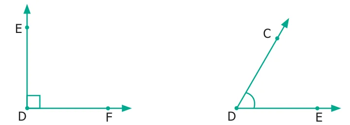
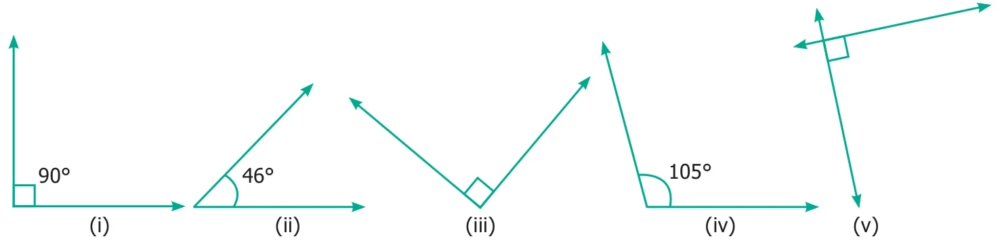
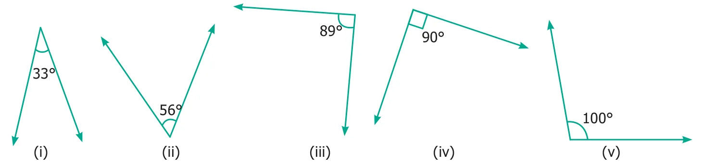
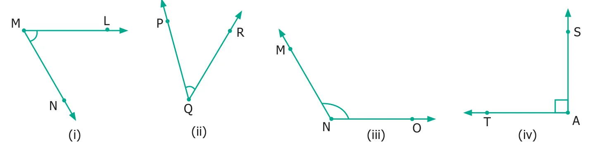
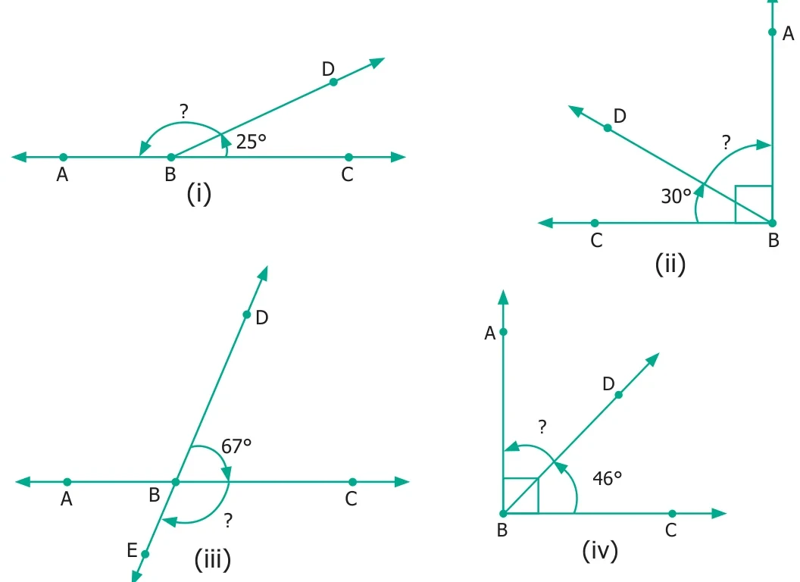

- Use any number of the given dots to make different angles.

- Name the vertex and arms that form each angle.

Vertex \(\underline{\qquad\qquad}\) Vertex \(\underline{\qquad\qquad}\)
Arms \(\underline{\qquad\qquad}\) Arms \(\underline{\qquad\qquad}\)
- Pick out the Right angles from the given figures.

- Pick out the Acute angles from the given figures.

- Pick out the Obtuse angles from the given figures.

- Name the angle in each figure given below in all the possible ways.

- Say True or False.
- \(20^{\circ}\) and \(70^{\circ}\) are complementary.
- \(88^{\circ}\) and \(12^{\circ}\) are complementary.
- \(80^{\circ}\) and \(180^{\circ}\) are supplementary.
- \(0^{\circ}\) and \(180^{\circ}\) are supplementary.
- Draw and label each of the angles.
- \(\angle NAS = 90^{\circ}\)
- \(\angle BIG = 35^{\circ}\)
- \(\angle SMC = 145^{\circ}\)
- \(\angle ABC = 180^{\circ}\)
- Identify the types of angles shown by the hands of the given clock.

- Find the complementary angle of
- \(30^{\circ}\)
- \(26^{\circ}\)
- \(85^{\circ}\)
- \(0^{\circ}\)
- \(90^{\circ}\)
- Find the supplementary angle of
- \(70^{\circ}\)
- \(35^{\circ}\)
- \(165^{\circ}\)
- \(90^{\circ}\)
- \(0^{\circ}\)
- Find the supplementary / complementary angles in each case.

Objective Type Questions

- In this Figure, which is not the correct way of naming an angle?
(a) \(\angle Y\) (b) \(\angle ZXY\) (c) \(\angle ZYX\) (d) \(\angle XYZ\) - In this Figure, \(\angle AYZ = 45^{\circ}\). If point 'A' is shifted to point 'B' along the ray, then the measure of \(\angle BYZ\) is \(\underline{\qquad\qquad}\).
(a) more than \(45^{\circ}\) (b) \(45^{\circ}\) (c) Less than \(45^{\circ}\) (d) \(90^{\circ}\)